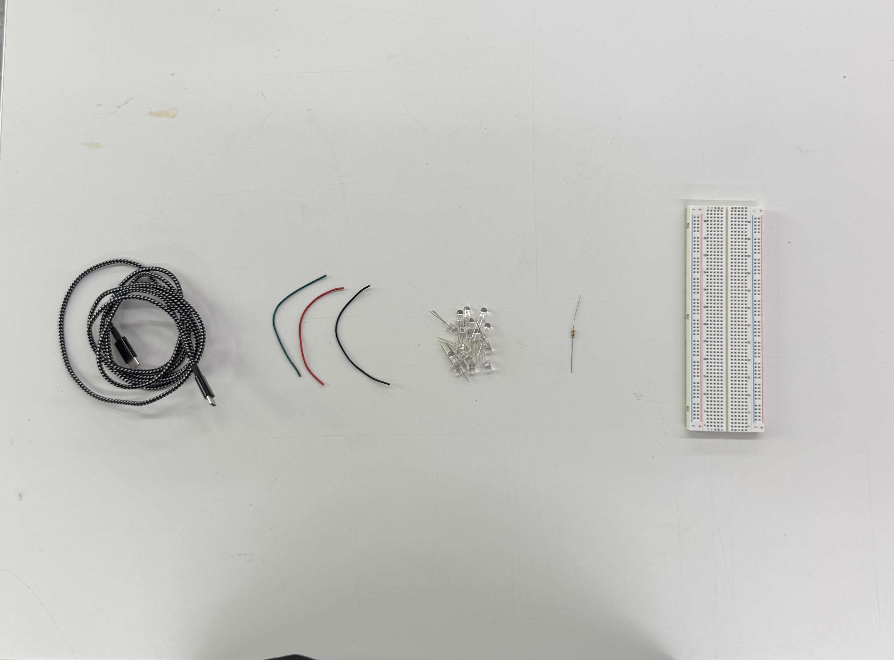
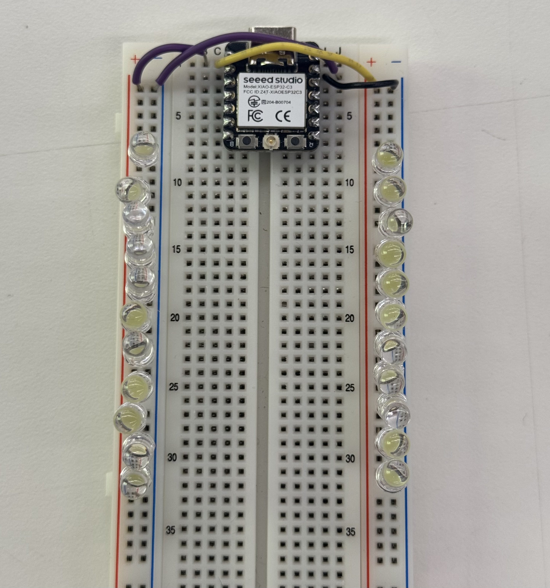
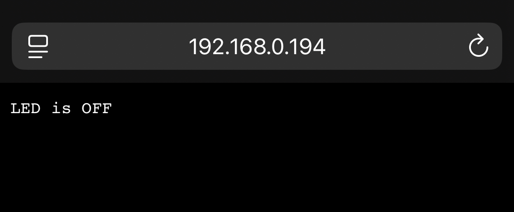
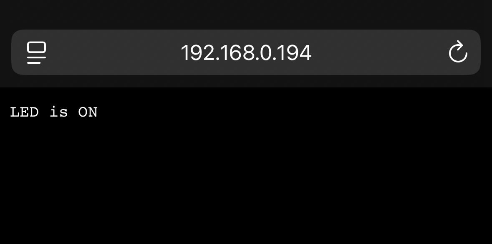
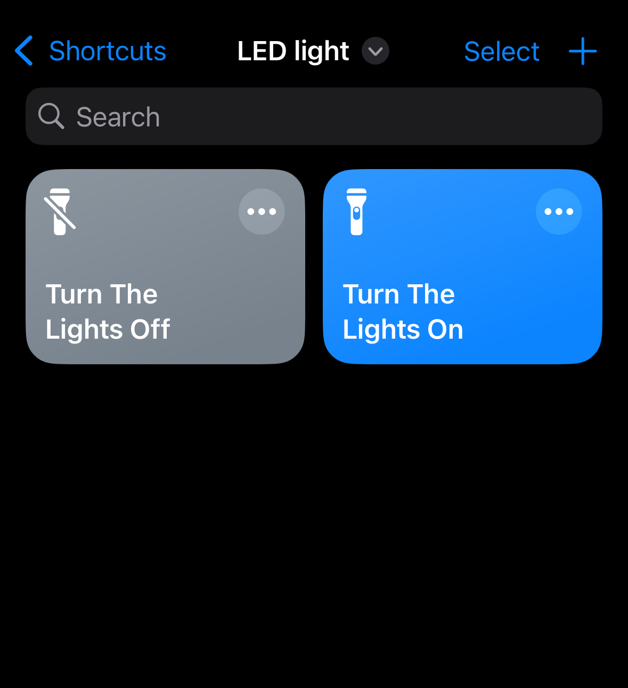
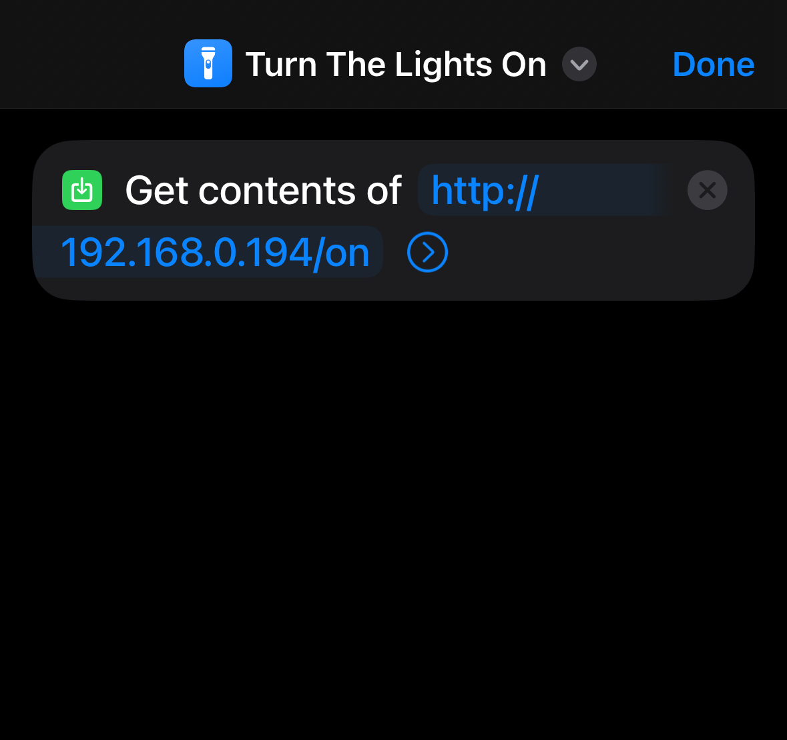
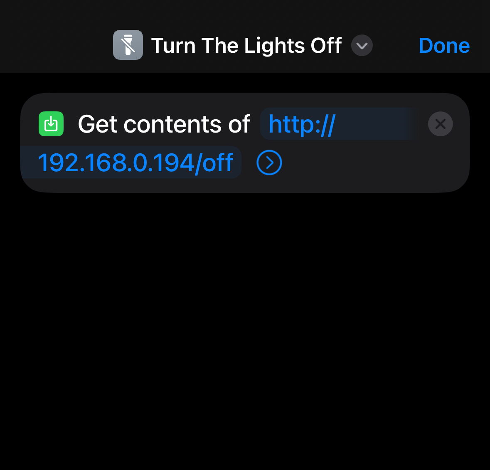
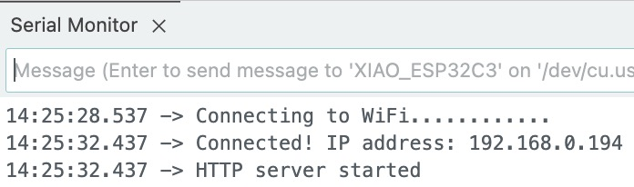
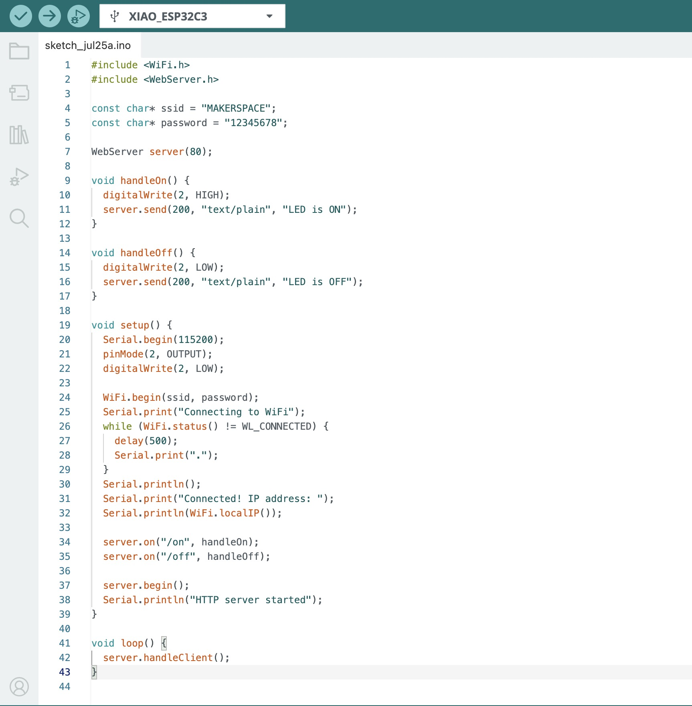

Week 09 · Networking
Radio, WiFi, Bluetooth (IoT)
Siri-controlled LEDs with the Xiao ESP32C3.

Step 1: Gather Materials
The following materials were used for the project:
- Xiao ESP32C3 microcontroller
- USB-C cable
- Breadboard
- 22 LED's (any color)
- 330-ohm resistor
- Three Pin To Pin wires
- iPhone with the Shortcuts app installed

Step 2: Wire the Circuit
The LED circuit was connected as follows:
- One wire connected the longer legs of the LED's to digital pin D2 on the Xiao ESP32C3.
- The shorter legs of the LED's were connected to the GND pin on the Xiao.

Step 3: Program the Xiao ESP32-C3 (Wi-Fi Version)
The Xiao ESP32-C3 was programmed using the Arduino IDE to connect to a Wi-Fi network and
host a simple HTTP server. The server listens for /on and /off
commands, which turn the LED on or off remotely.



My Code
#include <WiFi.h>
#include <WebServer.h>
const char* ssid = "MAKERSPACE";
const char* password = "12345678";
WebServer server(80);
void handleOn() {
digitalWrite(2, HIGH);
server.send(200, "text/plain", "LED is ON");
}
void handleOff() {
digitalWrite(2, LOW);
server.send(200, "text/plain", "LED is OFF");
}
void setup() {
Serial.begin(115200);
pinMode(2, OUTPUT);
digitalWrite(2, LOW);
WiFi.begin(ssid, password);
Serial.print("Connecting to WiFi");
while (WiFi.status() != WL_CONNECTED) {
delay(500);
Serial.print(".");
}
Serial.println();
Serial.print("Connected! IP address: ");
Serial.println(WiFi.localIP());
server.on("/on", handleOn);
server.on("/off", handleOff);
server.begin();
Serial.println("HTTP server started");
}
void loop() {
server.handleClient();
}
Step 4: Control with Siri Shortcut
Once the Xiao ESP32C3 is connected to Wi-Fi and running the server, it can be controlled from any browser or automation system that can send HTTP requests. To control it with Siri, I used the Shortcuts app on iOS.
Instead of using IFTTT or Homebridge, I created two simple Siri Shortcuts:
- Turn LED On: Sends a GET request to
http://192.168.0.194/on - Turn LED Off: Sends a GET request to
http://192.168.0.194/off
Each shortcut uses the "Get Contents of URL" action. You can add a voice command like "Turn the lights on" to trigger it with Siri.



Step 5: Testing and Results
To verify that the system was working correctly, I followed these steps:
- Connected my microcontroller to WiFi and opened the Serial Monitor to view the assigned IP address.


- Tested the HTTP endpoints by visiting
http://192.168.0.194/onandhttp://192.168.0.194/offin a web browser. The onboard LED responded immediately.
- Next, I ran the Siri Shortcuts using voice commands like "Turn on the lights" and "Turn off the lights". The LED responded correctly in real time.
The system worked reliably on the local network. I confirmed that the response from the ESP32 server showed "LED is ON" or "LED is OFF" as expected. There was minimal latency between issuing the Siri command and the physical LED state change.
Step 6: Reflection and Next Steps
This project demonstrated a simple yet powerful integration between voice control and microcontroller hardware. It shows how IoT systems can be controlled using everyday devices like smartphones.
Future improvements could include:
- Integrating with Homebridge for full Apple HomeKit compatibility
- Controlling sensors or actuators beyond LEDs